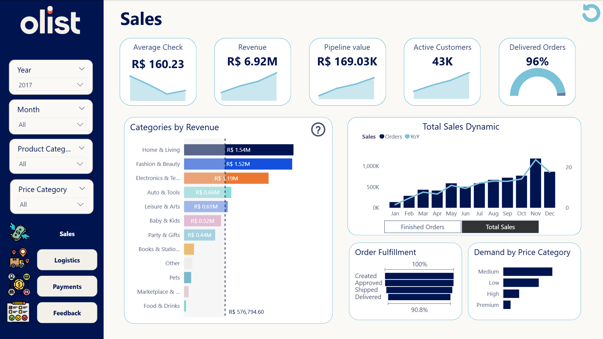
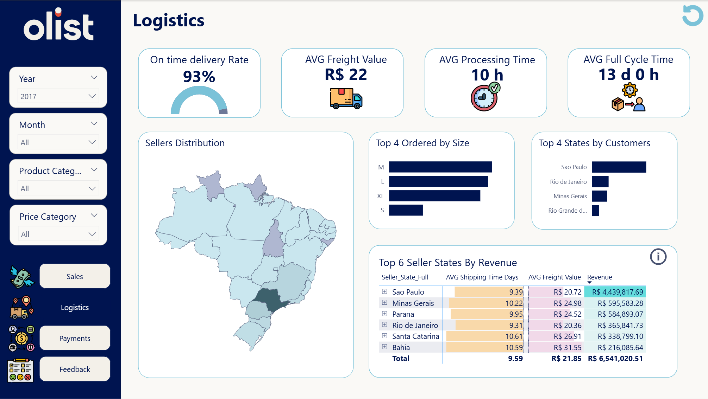
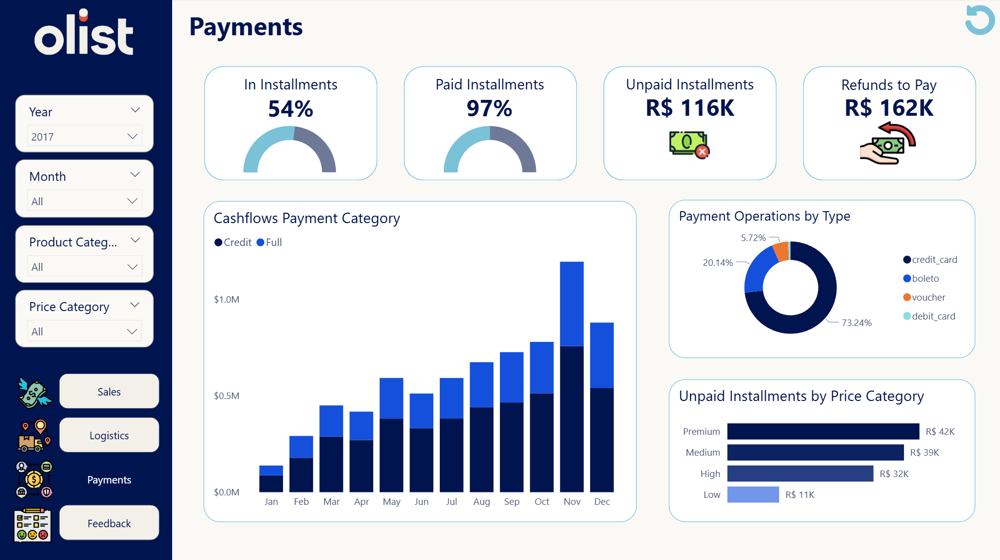
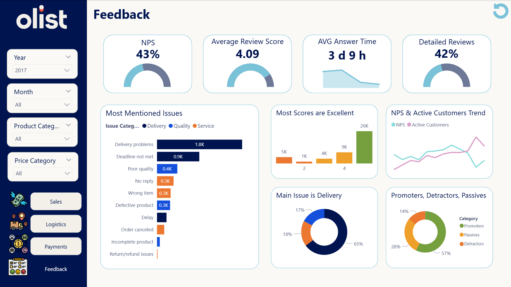

Power BI
Brazilian E-Commerce Analysis
A four-page Power BI report analyzing sales, logistics, payment behavior, and customer reviews using the Brazilian E-Commerce Public Dataset by Olist.
Project overview
The objective of this project was to transform several connected e-commerce datasets into an interactive business intelligence report.
The report provides an overview of business performance, identifies potential problem areas, and supports decisions related to sales, delivery operations, payment methods, products, and customer satisfaction.
Business questions
- How do revenue, order volume, and average order value change over time?
- Which product categories and geographical areas generate the strongest sales results?
- How efficiently are orders delivered to customers?
- Which factors are associated with late delivery?
- Which payment methods and installment options are used most frequently?
- How do delivery performance and product experience affect customer reviews?
Project workflow
- Imported and reviewed the connected Olist datasets.
- Cleaned and transformed the data using Power Query.
- Created relationships between orders, customers, products, sellers, payments, deliveries, and reviews.
- Designed a data model for cross-dashboard analysis.
- Created calculated columns and measures using DAX.
- Developed four dashboards covering sales, logistics, payments, and customer reviews.
- Applied consistent UX/UI principles, filters, navigation, tooltips, and visual indicators.
Sales dashboard
The sales dashboard presents the main commercial KPIs, including revenue, order volume, average order value, sales trends, product categories, and geographical performance.

Logistics dashboard
The logistics dashboard evaluates delivery duration, estimated and actual delivery dates, late deliveries, freight costs, and operational performance across locations and product groups.

Payments dashboard
The payments dashboard analyzes payment types, payment value, installment behavior, and differences in customer purchasing patterns.

Customer reviews dashboard
The customer reviews dashboard explores satisfaction levels, review-score distribution, changes over time, and possible relationships between customer feedback and delivery performance.
